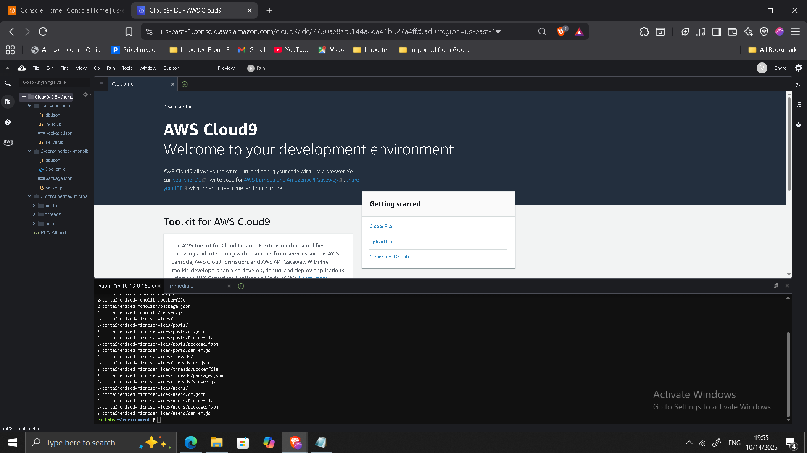
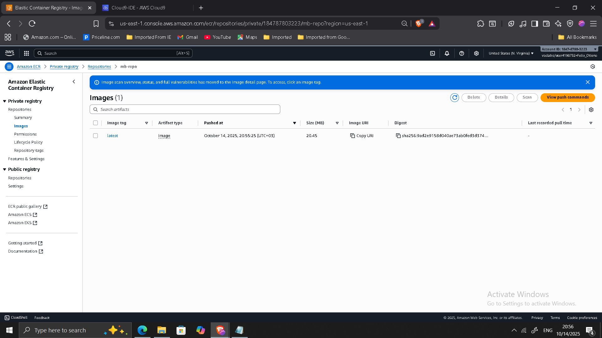
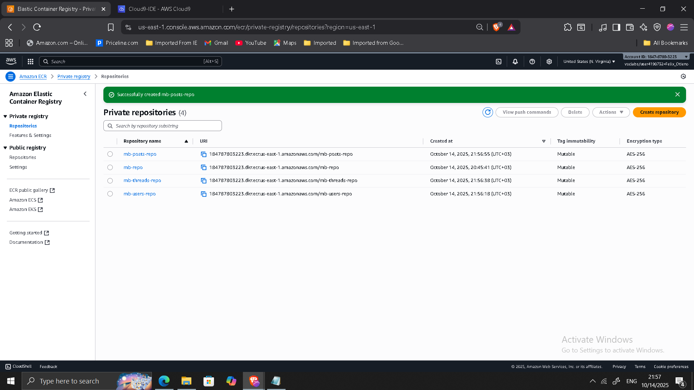
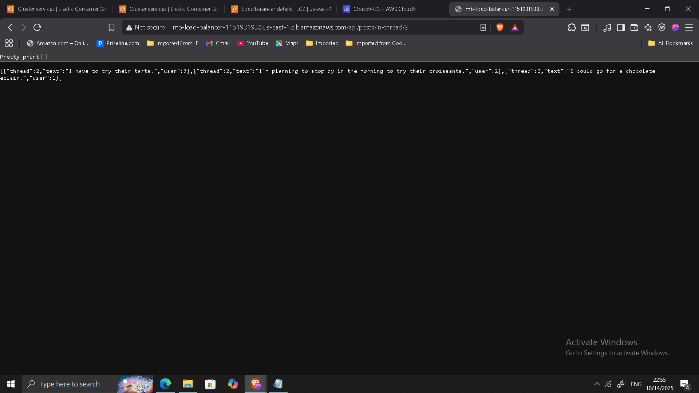

Decomposing a Monolithic Node.js Application into Microservices on Amazon ECS
Project: Microservices Modernization on AWS
Timeline: October 2025
Role: Solutions Architect (Cloud-Native Transformation)
Skills: Docker, Amazon ECS (EC2 Launch Type), Amazon ECR, Application Load Balancer, Path-Based Routing, Node.js, Microservices Architecture, Containerization Strategy
Executive Summary
Led the transformation of a monolithic Node.js message board application into a containerized microservices-based architecture deployed on Amazon ECS.
The modernization initiative introduced:
- Docker-based containerization
- Service decomposition into independent microservices
- Amazon ECR for container image management
- Amazon ECS for orchestration
- Application Load Balancer with path-based routing
- Independent scaling and deployment of services
Business Context
The original application was implemented as a single monolithic Node.js service. While functional, the architecture presented enterprise limitations:
- Tight coupling between components
- Limited deployment flexibility
- Reduced fault isolation
- Scaling entire application instead of individual services
The objective was to redesign the system into independently deployable, containerized microservices orchestrated in a cloud-native environment.
Phase 1: Baseline Monolith Deployment
- Deployed the Node.js monolithic application in AWS Cloud9.
- Installed required dependencies.
- Validated RESTful API endpoints.


Phase 2: Containerizing the Monolith
- Created Dockerfile using
node:alpine - Removed cluster logic (ECS manages scaling)
- Built container image locally
- Pushed image to Amazon ECR
Example build:
docker build -t mb-repo .
docker tag mb-repo:latest <ECR-URI>/mb-repo:latest
docker push <ECR-URI>/mb-repo:latest


Phase 3: Deploying the Containerized Monolith to ECS
- Created ECS cluster (
mb-ecs-cluster) - Provisioned EC2 instances
- Created task definition
- Deployed ECS service behind Application Load Balancer


This validated container-based deployment before service decomposition.
Phase 4: Service Decomposition
The monolith was refactored into three microservices:
- Users
- Threads
- Posts
Each service included:
- Independent
server.js - Independent Dockerfile
- Dedicated ECR repository
- Independent ECS task definition


Phase 5: Deploying Microservices to ECS
Each microservice was deployed as:
- Separate ECS task definition
- Independent ECS service
- Dedicated target group
- Shared Application Load Balancer


Application Load Balancer Configuration
Path-based routing rules:
/api/users*→ Users service/api/posts*→ Posts service/api/threads*→ Threads service

After validating microservices functionality, the monolithic service was decommissioned.
Validation & Testing
Verified each endpoint independently:
/api/users/api/threads/api/posts/in-thread/2
Invalid routes return validation message.

Architectural Impact
The modernization transitioned the system from:
Monolithic architecture
to
Distributed microservices architecture
Key improvements:
- Independent scaling per service
- Fault isolation
- Deployment flexibility
- Cloud-native container orchestration
- Improved operational resilience
This project demonstrates hands-on experience with service decomposition, containerization, ECS orchestration, and ALB routing — core capabilities for modern enterprise cloud platforms.